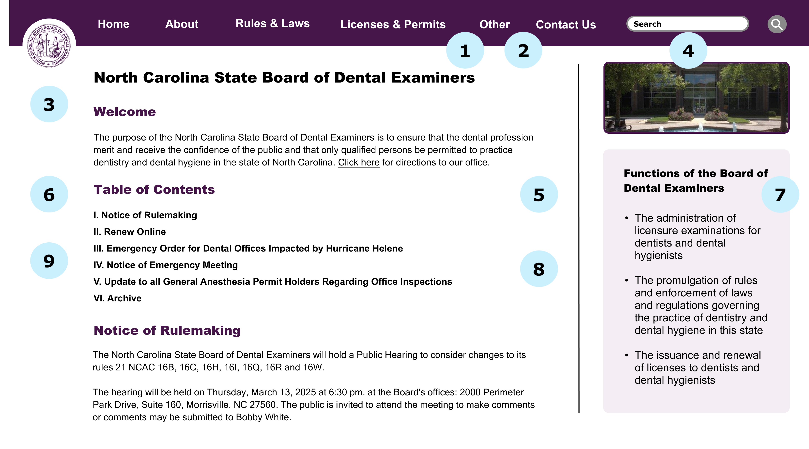

Responsive Redesign
Sarah Ridley ● Brown University ● March 2025
Introduction
'Responsive' websites use HTML and CSS to automatically resize or rearrange their content as the screen's dimensions change. Many high-profile websites prioritize responsiveness, however, many others with less resources for development and maintenance do not react to screen dimensions. In this case study, I take one such website and redesign its homepage for responsiveness.
Identification
The website I identified for this redesign is the homepage for the North Carolina State Board of Dental Examiners. I chose this website because it provides important information that pertains to many North Carolina citizens, however, it seems that the board has not invested the resources to make their site responsive.
Screenshots
The screenshots below display the current North Carolina State Board of Dentail Examiners (NCSBDE) website at various screen widths (375x667px, 768x1024px, and 3840x2160px). These screen widths represent the view on mobile, tablet, and computer respectively. As shown, the website does not consistently resize or rearrange its content depending on screen size, and instead, content often gets cut off.

Usability & Accessibility Issues
After exploring the NCSBDE homepage, I compiled this table of the usability (learnability, memorability, and efficiency) and accessibility issues I identified with the website. To detect accessibility issues, I used the tool WebAIM WAVE, which automatically detects possible accessibility problems.
| Learnability |
|
|---|---|
| Memorability |
|
| Efficiency |
|
| Accessibility |
WebAIM Wave discovered many accessibility issues. Below are those that I agree with most and found most concerning.
In addition to these issues, in my opinion, the biggest accessibility issue is this page's lack of responsiveness. When the screen is narrow, its contents get cut off, which makes it virtually impossible for users with small screens and physical impairments to use the site. |
As described, the NCSBDE website suffers from a variety of learnability, memorability, efficiency, and accessibly issues. The most common themes are the confusing nature of the 3 separate nav components, the lack of color coordination, the long height of the page and lack of structure, and the lack of responsiveness to narrow screens. Addressing each problem would improve the user experience and ease of use, not just for those with accessibility issues or new users, but for all users.
Visual Redesign
After identifying these usability and accessibility issues, I redesigned the homepage of the NCSBDE website with these concerns in mind. Before recreating the website with HTML and CSS, I created a visual design style guide and mockups with the design tool Figma.
Visual Design Style Guide
This guide contains the main colors, typography, and reusable components for my mockups and redesigned webpage. Creating a consistent palette and matching components improved the coordination and cohesiveness of my final redesign, and ideally improves the user experience. If the embedded Figma file does not load, please find it here.
Mockups
The following mockups display my redesign of the NCSBDE home page on mobile, tablet, and desktop screens. This redesign prioritizes responsiveness by reusing styling, layout, and components between screen sizes, while still adjusting to new proportions. If the embedded Figma file does not load, please find it here.
Usability & Accessibility Notes
My redesigns attempt to address the usability and accessibility issues I identified early in the following ways.
- Learnability: My redesign addresses learnabiity by consolidating the links to other NCSBDE pages. On computer, these internal links are all within the header and the dropdowns from the header. On mobile and tablet, these internal links are within the hamburger popup. Consolidating these links from 3 locations into only 1 makes the homepage more learnable because it makes navigating the site easier for first-time users.
- Memorability: I addressed memorability by coordinating the color palette and reducing the number of internal links in the header/hamburger popup. First, I made the header, as well as all subsections of the homepage the color grape, to unify the navigational components of the page. By reducing the color palette to only a few coordinated accent colors, the page is more cohesive and its elements are more memorable to returning users. Also, reducing the number of internal links makes it faster for returning users to find which page they need to revisit.
- Efficiency: My redesign addresses efficiency by reducing the length of the homepage. Instead of including all 25 subsections, I kept only the five most recently-added subsections, and then added an 'Archive' section which would link to old subsections. I also created a table of contents to scroll to each subsection, which improves efficiency by allowing experienced users to navigate to the section they need more quickly (instead of scrolling manually).
- Accessibility: I addressed accessibility primarily by making the homepage responsive, which allows users to access all functionalities of the homepage regardless of screen size. I also added alt text to all images, using headers to create structure, and carefully chose font colors and background colors to prioritize contrast and readability. Each of these choices removes barriers from people with physical and visual impairments to interact with the homepage.
Implementation Notes
To implement the above mockups, any developer would need extra details and annotations on the intentions of the design. The below annotations further explore the ideas behind my designs and how to bring them to life. The mobile and tablet redesigns are grouped and the computer redesign is separate, since tablet and mobile have a lot in common (although their differences are described below).
Mobile/Tablet
- As visible above, my structure of the mockups for the mobile screen and tablet screen sizes are very similar. The main difference is font size, as on the mobile screen, the default size of the paragraph text is 12px, while it is 15px on tablet.
- Regarding moving in between tablet and mobile sizes, the text size will scale according to the screen width, instead of scaling up at a specific threshold. The horizontal and vertical margins will also scale with screen dimensions, and the defualt margins are 5vh and 5vw.
- On both mobile and tablet (and unlike computer), the navigation options are not visible along the header, instead they are accessed by opening the menu by pressing the hamburger button on the top right. This interaction is modeled in the Figma mockups.
- Similarly, the information bubble on the computer about the 'Functions of the Board...' is hidden by default, and available by pressing the information button to the left of the hamburger button. This is also modeled in the mockups.
- The header and its buttons will be sticky, and stay in place as the user scrolls along the page.
- The NCSBDE logo will be fully contained in the header, unlike how it sits halfway out of the header on the computer. This logo will be a link back to the top of this homepage.
- The header will be a grid layout, with 3 columns. The logo will be the first column, and its left margin will be specified to keep it oriented left. The second and third columns will contain the info and hamburger buttons, and their right margins will keep them pushed towards the right of the screen.
- The hamburger and info popups, which are initially hidden, will be flexboxes with a column display, so that the options list down the screen, and each take up as much space as the screen height allows. Also, these popup components will scroll so that if some of the text is hidden, the user can navigate to it.
- Each of the items under Table of Contents is a link that brings the user to that section of the page.
- The page's content itself will remain as a block display, and any overflown content will be able to be scrolled down to. There should be no horizontal overflow.
Differences
Similarities
Computer
Computer (3840x2160px)
- Unlike the tablet and mobile displays, on the computer display, the main groups for the navigation options are displayed along the header. As shown in the Figma mockups, when you hover on an option, its font become slightly darker, and when you click on one of these options, a popup window appears and displays the links within that group.
- Like on tablet and mobile, the header is sticky, and remains at the top of the page as you scroll. This keeps the navigation accessible on all parts of the page, unlike on the original page, where you have to scroll back up to the top.
- The header will be layed out as a grid on the outside with two columns. The first column will only contain the logo, and it will be fixed to be the exact same width as the margin of the text in the content down below. This will ensure that the logo never overlaps with text as the user scrolls. The right column in this outer grid will be the rest of the header, and will itself be a flexbox with row display and space-around justification, to allow each nav option and the space bar to rearrange themselves based on screen width.
- The search bar and the search button will be grouped within a div in the right column of the header. This will allow me to control the spacing between the search bar and button differently than the spacing between the other header components (Home, About, etc).
- The content of the page will be a grid with two columns. The left column contains the majority of the textual information, and will scroll vertically but not horizontally. There should be no horizontal overflow, as the text should wrap to the next line. The right column contains an image and the 'Functions of the Board...', and will be sticky and will not scroll with the page.
- The left column will scroll. The table of contents in the left column will contain hyperlinks to different sections of the page to enable quick navigation.
- This sticky right column, containing an image and the 'Functions of the Board...', will itself be a grid with two rows. This will allow the image and the textbox to fit to adjust the height of the screen. The font size inside this textbox will adjust based on the screen width and height so that it looks like it fits the space.
- The text size of the main paragraph content on computer is 20px, but will not scale down to 15px for tablet until the screen's width is less than 1100 pixels. This will ensure that the font size doesn't change if the user enlarges or shrinks their window on their computer by a little bit, which could be disorienting.
- The left and right margins of the computer display will not be hard-coded pixels values, instead they will be based on viewport width so that they adjust automatically to the width of the screen. The top and bottom margins will be set with pixels, given that they should not be dependent on the viewport height.
Responsive Redesign
The final deployment of my redesigned NCSBDE website can be found here. The screenshots below display the redesigned website on mobile, tablet, and computer screens.


As my screenshots demonstrate, my redesign faithfully implements my Visual Style Design Guide and my mockups. This redesign was a valuable exercise in critiquing the usability, accessibility, and responsiveness of an existing website, and then putting my observations into practice. The Visual Redesign section specifically describes how I improved these areas. I found it suprising how many important websites like the NCSBDE homepage lack responsive features, impeding the user experience and making actions more difficult. However, I also learned that building a responsive website is not at all simple, and takes careful thought, planning, and iteration.
Please reach out to sarah_ridley@brown.edu with any questions or feedback.